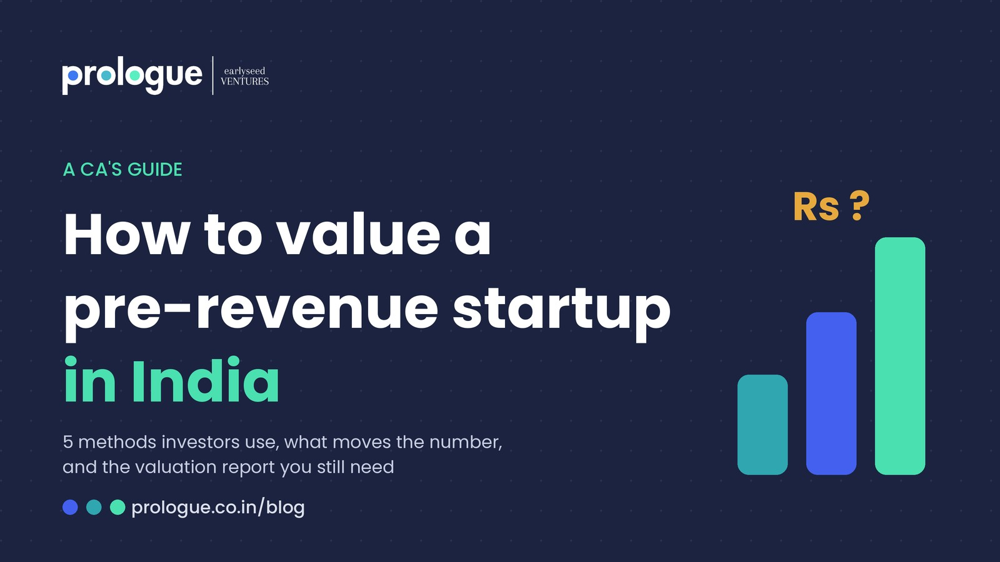
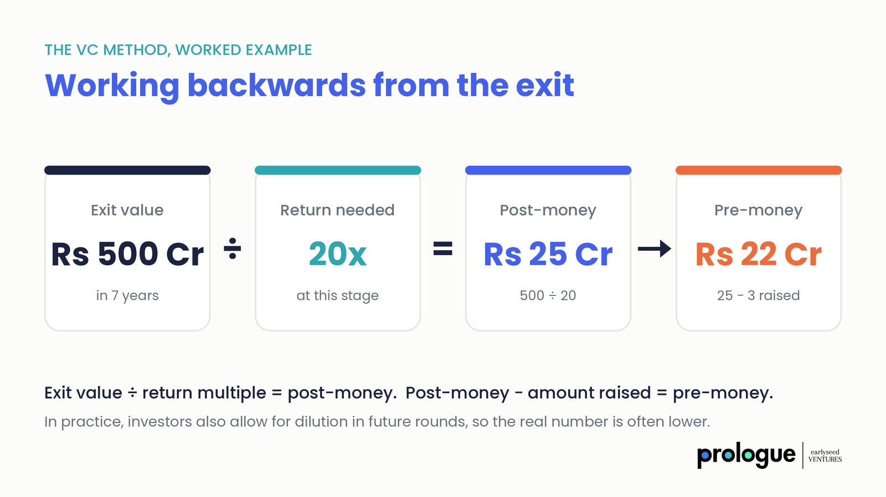
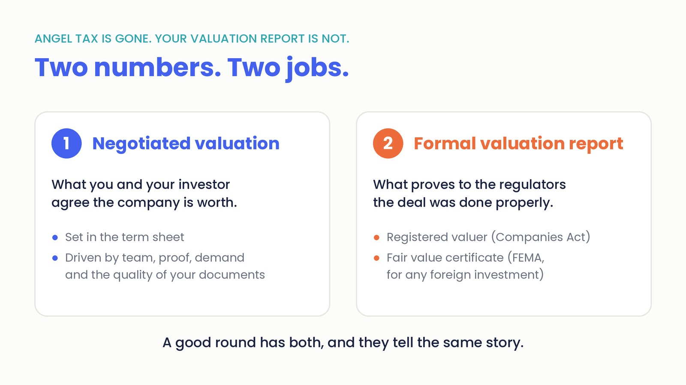

"What should my valuation be?"
It is the question I am asked most, usually in the first fifteen minutes of meeting a founder. The company has no revenue yet. Sometimes it has no product yet. And the founder wants a number.
It's understandable, and justifiable. The valuation decides how much of your company you give away for the money you raise. Get it wrong on the high side and you scare investors off or set up a painful down round later. Get it wrong on the low side and you give away a piece of your company you will never get back.
As a Chartered Accountant at Earlyseed Ventures, I sit across the table from founders every week, alongside our investors deciding whether to write the cheque. So let me explain how a pre-revenue startup is actually valued in India, from both sides of that table.
We have had founders walk in with an idea that was genuinely brilliant. If the revenue had been there, the company could easily have been worth Rs 50 crore. But they were at stage zero, with no product and no customers, and they were asking for Rs 50 crore anyway. They were valuing the company they hoped to build, not the one in front of us. An investor will pay for what you have proven today plus a fair share of what could come. They will not pay for all of the future in advance.
The honest answer: it is a negotiation, not a formula
A company with revenue can be valued on its numbers. A company without revenue cannot, because the numbers do not exist yet. What an investor is really pricing is a belief: that this team, in this market, can build something much bigger than it is today.
That does not mean the number is random. Investors use a handful of methods to anchor their thinking, and they compare you with deals they have seen recently. Your job as a founder is to understand those anchors well enough to walk in with a range you can defend, and the story and documents to back it.
The five methods investors actually use
You do not need to master all of these. You need to know which ones the investor in front of you is likely using, so you can speak their language.
1. The Berkus method: scoring what reduces risk
The Berkus method gives a value to each of five things that make a startup less risky: a sound idea, a working prototype, a strong team, strategic relationships, and early signs of product rollout or sales. In the original US version, each is worth up to $500,000. Investors in India adapt the amounts to local deal sizes, but the logic is the same. Every box you can genuinely tick adds to your value.
It is simple, and that is the point. It forces an honest conversation about what you have actually built versus what you plan to build.
2. The Scorecard method: how you compare to your peers
Here the investor starts with the average valuation of similar pre-revenue startups in your sector and region. Then they adjust it up or down based on how you compare on team, market size, product, competition, partnerships and how much more money you will need. Team and market size usually carry the most weight.
If you are a founder in Pune building agritech, you are being compared with other early agritech deals, not with a Bengaluru AI company that just made headlines.
3. The VC method: working backwards from the exit
This is the one most funds use, even if they do not call it that. The investor asks what your company could be worth when they exit, and what return they need to justify the risk. Then they work backwards.
A simple example. Say an investor believes your company could be worth Rs 200 crore in seven years, and at your stage they need a 20x return. Your value after their investment (post-money) should be about Rs 10 crore. If you are raising Rs 2 crore, your value before the investment (pre-money) is about Rs 8 crore. In practice, investors also allow for their stake shrinking in future rounds, so the real number is often lower.

This is why your market size slide and your growth plan matter so much. They are the inputs to this calculation.
4. Comparable deals: what the market paid recently
Investors look at what similar companies raised, at what stage and at what valuation. In India, databases like Tracxn and Venture Intelligence, and news of recent rounds, are where this data comes from. If three comparable startups raised seed rounds at Rs 15 to Rs 25 crore pre-money in the last year, a Rs 60 crore ask will need a very good reason.
5. Discounted cash flow (DCF): useful, with a caution
DCF values a company on the cash it is projected to generate, brought back to today's value. For a pre-revenue startup, every number in a DCF is an assumption, so most early investors give it little weight in negotiation. But it matters for a different reason, which I explain below: DCF is one of the methods accepted for formal valuation reports in India.
What actually moves the number
Methods give an investor a starting point. What moves them from that point is almost always one of four things.
The first is the team. At pre-revenue, the investor is betting on people. Relevant experience, a founder who knows the customer deeply, and a co-founder team that complements each other will do more for your valuation than any spreadsheet.
The second is proof, however early. A signed pilot, a letter of intent from a real customer, a waitlist, a government tender you have qualified for. Anything that shows the market wants what you are building turns a belief into evidence.
The third is competition for the deal. If two investors want in, the price goes up. This is why the way you run your fundraise matters as much as the pitch.
The fourth is the quality of your documents. When your deck, financial model and data room are clear and consistent, investors trust your numbers faster. When the market size on slide 4 does not match the model, they start discounting everything else too.
One of the deep tech companies we work with is a good example. Their revenue was still modest, the kind of number that would normally pull a valuation down. But their valuation held through the investor conversations, because their data room was complete and their research and development work was documented properly. Investors who understood the sector could open the files, see the depth of the technology and judge for themselves what it was worth. In deep tech especially, the right investor values what you have built in the lab, not just what you have sold. Your job is to make that work easy for them to see.
Angel tax is gone. Your valuation report is not.
This is where I put on my CA hat, because I see founders get it wrong.
For years, Indian founders feared "angel tax", which taxed a startup when it issued shares above their fair value. That provision stopped applying to shares issued from 1 April 2025. It was genuinely good news.
But many founders now assume they no longer need a formal valuation at all. That is a mistake, for two reasons.
The first is the Companies Act. When a company issues shares to new investors through a preferential allotment, the price has to be based on a report from a registered valuer. Your negotiated number and the valuer's report need to line up.
The second is FEMA. If any part of your round comes from an investor outside India, the shares cannot be issued below a fair value certified using an internationally accepted pricing method. Skip the report, and your filing with the RBI can get stuck months after the money has arrived.
So think of it as two numbers with two jobs. The negotiated valuation is what you and your investor agree the company is worth. The formal valuation report is what proves to the regulators that the deal was done properly. A good round has both, and they tell the same story.

This is general information, not legal advice. The rules for your specific round depend on how it is structured and who is investing, so check with your CA or company secretary before you close. Source: King Stubb & Kasiva, Angel Tax Is Gone. What Still Matters for Startup Fundraising in India?
Four mistakes I see again and again
The first is picking a number because a friend's startup raised at it. Their sector, stage and traction are not yours. Investors will ask how you arrived at your number, and "that is what they got" is not an answer.
The second is chasing the highest possible valuation. A high number feels like a win on the day you sign. But if you cannot grow into it by your next round, you face a down round, which hurts morale, dilutes you further and worries every future investor.
The third is a valuation that your own documents contradict. If your deck promises Rs 100 crore revenue in five years but your financial model gets there only on assumptions nobody would believe, the investor stops trusting both. This is also why your pitch deck matters: read what a startup pitch deck should look like.
The fourth is treating valuation as the only term that matters. Liquidation preferences, board seats and anti-dilution clauses can cost you more than a slightly lower valuation. Read the whole term sheet, not just the headline number.
Walk in with a number you can defend
There is no perfect valuation for a pre-revenue startup. There is only a number you can explain, backed by a story investors believe and documents that hold up when they check.
That is what we build at Prologue. Our team works on both sides of the table, so we prepare your pitch deck, financial model and valuation report the way an investor will read them, and make sure all three tell the same story. If you are preparing to raise and are not sure what your company is worth, send us your deck and we will take a look.

About Monica Gupta
Monica is the Co-Founder and CEO of Earlyseed Ventures and a mentor at Prologue. A Chartered Accountant and Certified Independent Director, she works with founders across investment banking and corporate advisory to get them ready for investors.
She also conducts financial literacy programmes for women from all strata of society, helping them take confident charge of their money.